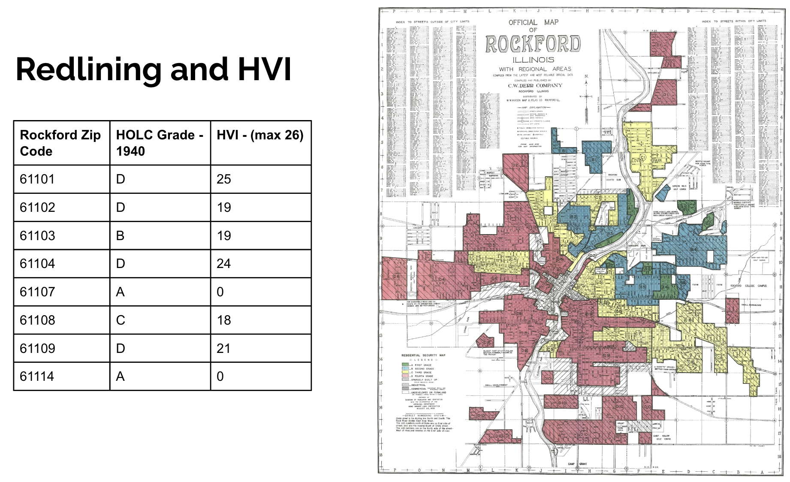
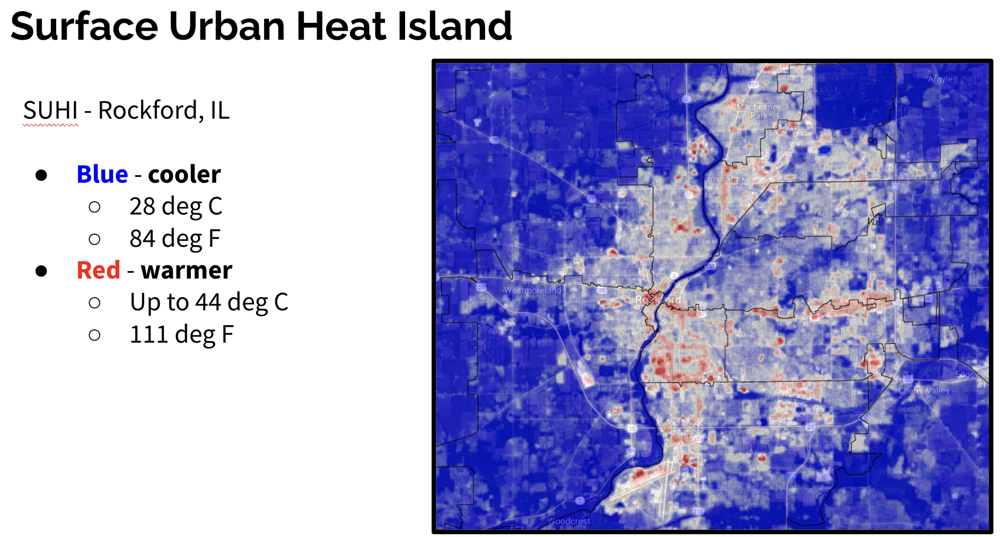
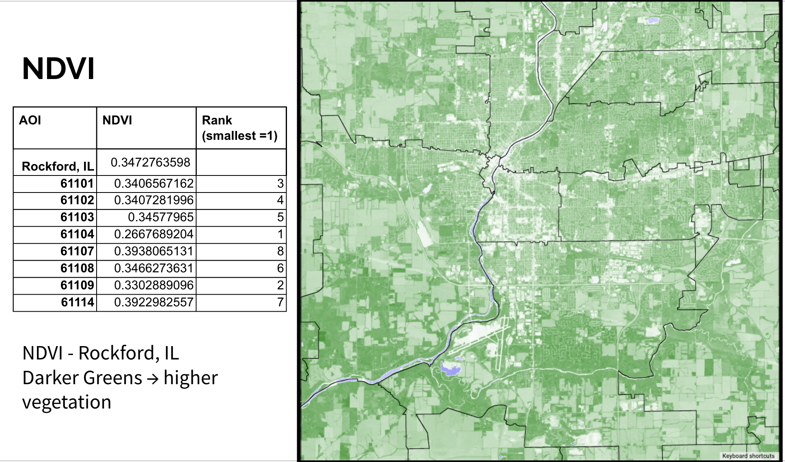
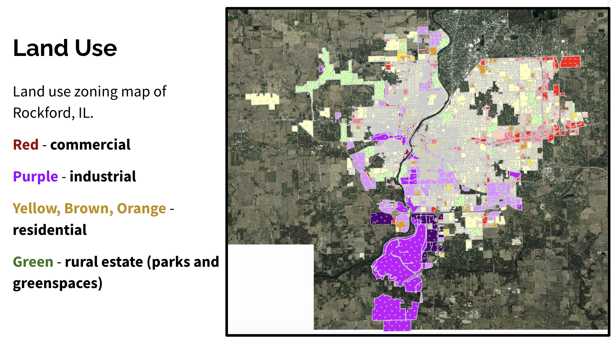

Remote sensing class case study · EAE 554 · Fall 2023
Where is Rockford hottest—and who is most vulnerable?
Not every neighborhood experiences summer heat the same way. Pavement, buildings, trees, and green spaces all influence how much heat an area absorbs and retains, but there's another important consideration... who lives in the hottest areas, and how prepared are those communities to cope with extreme heat?
For my EAE 554 Remote Sensing term project, I investigated the urban heat island effect in Rockford, Illinois. Using satellite data, vegetation measurements, historical redlining maps, and heat vulnerability data, I examined which neighborhoods experience the greatest surface heating and where that heating overlaps with social vulnerability.
The problem
Why do some neighborhoods get hotter than others?
Cities tend to be warmer than their rural surroundings, a phenomenon known as the urban heat island (UHI) effect. Roads, parking lots, rooftops, and other built surfaces absorb and store solar energy. The removal of vegetation also reduces shade and evaporative cooling, and waste heat from vehicles, buildings, and industry can contribute as well.
Heat is also a public health concern. Exposure to extreme heat can contribute to heat exhaustion, heat stroke, cardiovascular and respiratory complications, and death. Vulnerability depends on more than outdoor temperature: age, health, income, housing, access to air conditioning, and transportation can all influence a person's ability to stay safe in high temps.
Rockford is an interesting place to examine these issues. Like many older industrial cities, it has a history of redlining, the discriminatory practice of assigning neighborhoods grades that affected access to mortgage lending and investment. Research in other U.S. cities has connected historical housing discrimination with present-day differences in urban temperatures.
What I wanted to find out:
- How severe is the urban heat island effect in Rockford?
- Which neighborhoods experience the greatest surface heating?
- How are temperature differences related to vegetation, land use, and historical redlining?
- What could help reduce heat risks for vulnerable communities?
The approach
How can we measure an urban heat island from space?
I used Landsat-8 satellite observations from July and August of 2013–2022. Thermal infrared data gives an estimate of daytime land-surface temperature, and visible and near-infrared observations were used to measure vegetation.
The surface urban heat island index (SUHI) was calculated by subtracting the mean rural land-surface temperature from the mean urban land-surface temperature. I calculated the difference for Rockford as a whole and for individual ZIP codes in order to understand which neighborhoods experience stronger SUHI effects.
I also calculated the Normalized Difference Vegetation Index (NDVI), which measures the relative presence of green vegetation using red and near-infrared reflectance.
Finally, I compared satellite results with historical Home Owners Loan Corporation (HOLC) neighborhood grades, heat vulnerability estimates, U.S. Census information, and Winnebago County land-use zoning maps. The analysis was completed using Google Earth Engine and GIS tools.
Explore the analysis code: NDVI calculations · SUHI calculations
ZIP codes were used as neighborhood boundaries for this case study. Two ZIP codes (61107 and 61114) did not have available heat vulnerability scores in the source dataset; those missing values do not mean zero vulnerability.
The findings
What did I find in Rockford?
Rockford's average summer daytime land-surface temperature was approximately 35.6°C (96°F), compared with 28.9°C (84°F) in the surrounding rural reference area. That gives Rockford an average surface urban heat island intensity of about 6.7°C (12°F).
ZIP code 61104 stood out with the highest surface heat island intensity, the lowest vegetation index, and a heat vulnerability score of 24 out of 26. This historically redlined area includes residential neighborhoods alongside industrial and commercial land use.
ZIP 61103 had the second highest surface heat island intensity (about 7.5°C), and its industrial land use was also apparent in the temperature maps. Across the study area, the zoning and vegetation patterns help explain why some neighborhoods are hotter than others.




Click or tap a figure to enlarge it. These results describe satellite-derived land-surface temperatures, not the air temperatures experienced by individual residents. The maps identify spatial patterns and overlaps; they do not establish that historical redlining directly caused the measured temperatures or demonstrate individual health outcomes.
Why it matters
What does this mean for the people who live here?
We all experience the weather, but we don't all have the same resources to cope with it. Someone who works outdoors, waits for a bus without shade, lives in a poorly insulated home, or cannot afford air conditioning may have a harder time escaping dangerous heat. Older adults, children, and people with certain health conditions can be especially vulnerable.
That's why I wanted to look beyond the temperature maps. In ZIP 61104, the overlap between hotter surfaces, limited vegetation, and high heat vulnerability suggests a neighborhood where heat mitigation and community resources could be especially valuable.
Why does the neighborhood pattern matter?
Knowing where high surface temperatures overlap with social vulnerability can help communities think about where to prioritize tree planting, shaded public spaces, cooling resources, and other investments.
The goal isn't just to make a temperature map look cooler, it's to make neighborhoods healthier, safer, and more comfortable for the people who live there.
Larger studies have found similar inequities across U.S. cities. That makes local case studies like this a useful starting point for conversations about how urban design, historical investment, and public health intersect, and then to do something about it!
Possible solutions
What could help make Rockford cooler?
The case study identifies several potential ways to reduce surface heating and help residents cope with extreme heat. These strategies would benefit from additional neighborhood-scale observations and community input before implementation.
- Expand vegetation: Plant street trees, add shaded medians, reclaim vacant lots as parks, and provide free trees to residents.
- Cooler infrastructure: Incentivize reflective or light-colored roofs and green roofs; improve industrial energy efficiency.
- Community outreach: Extend cooling center hours, partner with schools and libraries, and educate residents on heat safety.
These approaches address different parts of the problem... Trees and green spaces can reduce local surface heating through shade and evapotranspiration. Cool roofs can reduce solar heat absorption by buildings. Accessible indoor cooling spaces and heat safety information help people during hot weather.
A community-centered next step:
A more detailed assessment could combine the satellite maps with neighborhood air temp observations, tree canopy inventories, housing conditions, and input from residents. That would help determine which interventions are most useful in the places that need them.
Keep exploring
Research and resources
Interested in the science behind urban heat islands, the connections with historical housing policies, or ways to make neighborhoods more resilient? Here are a few places to start.
Related research
- Hoffman et al. (2020) — Historical housing policies and urban heat in 108 U.S. cities.
- Hsu et al. (2021) — Unequal exposure to urban heat islands across major U.S. cities.
- Manware et al. (2022) — Residential and racial/ethnic disparities in heat vulnerability.
Local and practical resources
- City of Rockford Tree Replacement Program — Information about adding trees in Rockford.
- Rockford Forestry — Urban trees, planting policies, and management of the city's public trees.
- EPA Guide to Reducing Heat Islands — Trees, cool roofs, green infrastructure, and community-scale strategies.
- National Weather Service Heat Safety — Guidance for recognizing heat danger and staying safe.
This page presents findings from a Fall 2023 remote sensing class project. It is a historical case study, not a current operational heat-risk forecast.